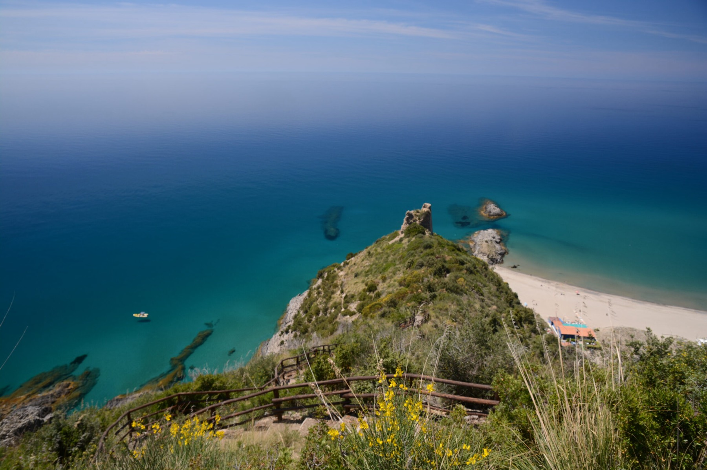
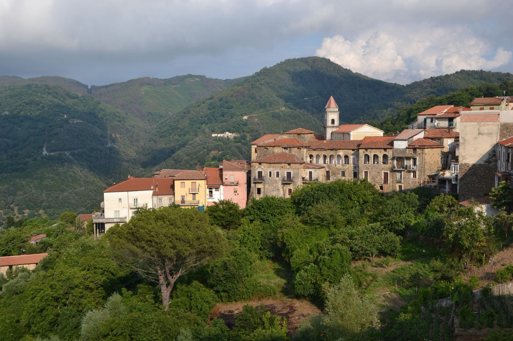

Ascea Marina
Dove convivono la lunga spiaggia di sabbia dorata e la storia millenaria del Parco Archeologico di Velia.
I luoghi simbolo di Ascea Marina
Parco Archeologico di Elea Velia


Sentiero degli Innamorati
Il Sentiero degli Innamorati si imbocca nei pressi della Scogliera di Marina di Ascea, in località Punta del Telegrafo. Inaugurato nel 2017 grazie a un’importante opera di riqualificazione del Parco Nazionale del Cilento, Vallo di Diano e Alburni e del Comune di Ascea. Una passerella in legno che si imbocca presso la Scogliera ne anticipa l’ingresso. Un’insegna ben evidente, poi, comunica l’inizio del sentiero è visibile. Il Sentiero degli Innamorati si immerge nella macchia mediterranea caratteristica del Cilento, tra sali scendi anche abbastanza impegnativi, per poi regalare viste mozzafiato.
Il Sentiero degli Innamorati è lungo circa 2 km e ha un dislivello complessivo di 140 metri. Il sentiero è anticipato da ben 12 passerelle e 8 piattaforme in legno il cui scopo è quello di preservare le dune e la flora della spiaggia della Scogliera di Ascea Marina. Il Sentiero può essere affrontato sia da chi ama il trekking, che dai turisti che vogliano godere di una vista incantevole sul Golfo di Velia. Per giungere in fondo al sentiero sono previste due salite importanti, fatte di gradoni, e relative discese. Sono previsti due punti panoramici, uno per salita. Gli scorci, addentrandosi nella macchia mediterranea del Cilento, sono incantevoli. Quando si giunge in cima però, si resta estasiati da una vista da cartolina.

Museo del Mare – mUMANA
Il Museo del Mare e della Navigazione Antica – mUMANA di Ascea è situato all’interno dell’edificio della Scuola Primaria di Ascea, nei pressi di Piazza Europa. Il Museo ha l’intento di racconta la storia della colonia greca di Elea, conosciuta in epoca romana come Velia. Attraverso i reperti archeologici esposti, il museo illustra lo sviluppo della Scuola Filosofica e Medica di Elea, fondata dal filosofo Parmenide, e l’importanza storica e culturale della città le cui vicende storiche sono legate alle rotte della navigazione arcaica.

Gli altri borghi

Ascea Paese
L’affascinante centro storico dove perdersi tra vicoli suggestivi, antiche tradizioni e scorci storici unici.

Mandia
La frazione più interna incastonata tra uliveti secolari e rigogliosi castagneti.

Terradura
Un’oasi rurale ricca di storia e paesaggi incontaminati con le sue radici italo-greche.

Catona
Un'oasi di pace e spiritualità, custode del Santuario della Madonna del Carmine.